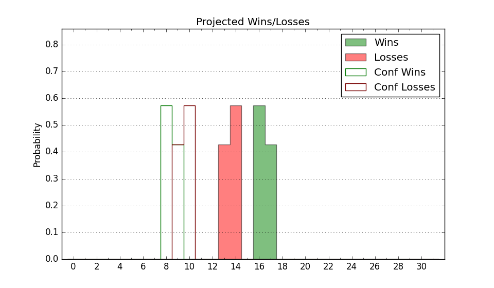

| Home | Game Probabilities | Conferences | Preseason Predictions | Odds Charts | NCAA Tournament |
| City: | New Orleans, Louisiana | |
| Conference: | American (8th)
| |
| Record: | 8-9 (Conf) 16-13 (Overall) | |
| Ratings: | Comp.: -5.4 (222nd) Net: -5.4 (222nd) Off: 106.5 (214th) Def: 111.8 (221st) SoR: 0.0 (103rd) |
| Remaining | ||||||
|---|---|---|---|---|---|---|
| Date | Opponent | Win Prob | Pred. | |||
| 3/8 | Memphis (134) | 43.3% | L 72-74 | |||
| Previous | Game Score | |||||
| Date | Opponent | Win Prob | Result | Off | Def | Net |
| 11/3 | Samford (219) | 63.9% | W 85-72 | 19.9 | 4.0 | 24.0 |
| 11/8 | Texas St. (252) | 70.9% | W 79-71 | 4.4 | -5.6 | -1.2 |
| 11/11 | @Louisiana Lafayette (317) | 61.1% | W 66-62 | -3.5 | 8.9 | 5.4 |
| 11/14 | New Orleans (195) | 58.9% | L 63-85 | -13.9 | -21.4 | -35.3 |
| 11/21 | (N) Utah St. (28) | 5.2% | L 75-96 | 7.5 | -14.2 | -6.8 |
| 11/23 | (N) Boston College (150) | 34.5% | W 93-90 | 21.7 | -6.9 | 14.8 |
| 11/28 | Nicholls St. (237) | 68.3% | W 82-72 | 6.2 | -1.9 | 4.3 |
| 12/2 | Grambling St. (291) | 79.2% | W 65-63 | -0.4 | -3.7 | -4.1 |
| 12/6 | Akron (70) | 22.6% | L 71-88 | -7.0 | -6.7 | -13.7 |
| 12/13 | @UC San Diego (126) | 17.0% | L 67-93 | -11.5 | -7.0 | -18.4 |
| 12/17 | Louisiana Tech (244) | 69.3% | W 61-53 | 0.1 | 9.4 | 9.5 |
| 12/20 | Portland St. (133) | 43.2% | W 63-61 | -5.4 | 9.5 | 4.1 |
| 12/31 | @East Carolina (274) | 46.1% | W 79-70 | 17.7 | 2.0 | 19.8 |
| 1/4 | Florida Atlantic (127) | 41.5% | W 69-66 | -7.4 | 13.8 | 6.4 |
| 1/10 | @UTSA (344) | 74.5% | W 85-52 | 9.4 | 25.7 | 35.0 |
| 1/14 | UAB (120) | 39.3% | L 69-82 | -6.7 | -11.6 | -18.3 |
| 1/18 | North Texas (147) | 48.0% | L 63-71 | -6.1 | -3.1 | -9.2 |
| 1/21 | @Florida Atlantic (127) | 17.2% | L 74-79 | 4.1 | 3.0 | 7.1 |
| 1/23 | @Charlotte (189) | 27.6% | L 70-73 | -6.4 | 7.5 | 1.1 |
| 1/28 | South Florida (54) | 18.2% | L 83-97 | 6.5 | -13.6 | -7.1 |
| 2/1 | @Memphis (134) | 18.3% | W 78-76 | 16.4 | 0.5 | 16.9 |
| 2/8 | Wichita St. (85) | 27.0% | L 61-75 | -17.4 | 9.0 | -8.3 |
| 2/11 | Temple (175) | 53.8% | W 77-66 | 4.6 | 14.1 | 18.6 |
| 2/15 | @UAB (120) | 16.0% | W 55-54 | -11.5 | 27.5 | 16.0 |
| 2/19 | @North Texas (147) | 21.3% | W 77-71 | 21.4 | -2.1 | 19.3 |
| 2/22 | Rice (245) | 69.8% | W 81-75 | 8.8 | -1.3 | 7.5 |
| 2/25 | Tulsa (49) | 16.9% | L 56-90 | -21.9 | -11.0 | -32.9 |
| 3/1 | @South Florida (54) | 6.2% | L 62-90 | -10.9 | -0.2 | -11.2 |
| 3/5 | @Temple (175) | 25.4% | L 60-89 | -15.1 | -13.5 | -28.7 |
| Stats & Trends | |||||
|---|---|---|---|---|---|
| Current | Day | Week | Month | Season | |
| Composite | -5.4 | -1.0 | -1.6 | -1.1 | -4.2 |
| Comp Rank | 222 | -12 | -14 | -12 | -87 |
| Net Efficiency | -5.4 | -1.0 | -1.6 | -1.0 | -- |
| Net Rank | 222 | -12 | -14 | -9 | -- |
| Off Efficiency | 106.5 | -0.5 | -0.9 | -2.1 | -- |
| Off Rank | 214 | -12 | -19 | -43 | -- |
| Def Efficiency | 111.8 | -0.4 | -0.6 | +1.1 | -- |
| Def Rank | 221 | -6 | -9 | +32 | -- |
| SoS Rank | 154 | +7 | +29 | +73 | -- |
| Exp. Wins | 16.4 | -0.3 | -0.4 | +1.7 | +0.6 |
| Exp. Conf Wins | 8.4 | -0.3 | -0.4 | +1.7 | +0.0 |
| Conf Champ Prob | 0.0 | -- | -- | -- | -7.3 |

| Advanced Stats | ||
|---|---|---|
| Stat | Value | Rank |
| Off Eff FG % | 0.503 | 212 |
| Off Ast Ratio | 0.149 | 170 |
| Off ORB% | 0.219 | 352 |
| Off TO Rate | 0.138 | 122 |
| Off FT Ratio | 0.442 | 16 |
| Def Eff FG % | 0.520 | 194 |
| Def Ast Ratio | 0.161 | 278 |
| Def ORB% | 0.328 | 285 |
| Def TO Rate | 0.151 | 139 |
| Def FT Ratio | 0.362 | 208 |